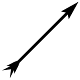

Just check out the source code of the "nested" block.
I am a Small paragraph.
I was written in small case... But text-transform changed me to uppercase
Overlined text in text-decorationUnderlined text in text-decoration
Italic text in font-style
Oblique text in font-style
Small-caps text in font variant
Normal text in font variant
Let's try out background image repetition.... This is background repeat-x; The end of the line.
Let's try out background image repetition.... This is background repeat-y; The end of the line.
Let's try out background image repetition.... This is both background repeat-x,y; The end of the line.
I have a solid border I have a groove border I have a ridge border I have a dashed border I have a double border I have a dotted border
The border sequence : width style color...Try it out with style="bla bla"..I don't know why border="bla bla " is not working
I am a link.Try clicking, hovering , activating me....
Let's learn about floating and positioning now...
nfiwnu iwnfwun ifnwiun nfnuw nownfow nowfn owfjsdo jwdj0ej 0jfirewfon cowne owfinjfw0jc0jfwfwf9fjw 0w wfwifofijo fijwfwiug utuyghfe htii hlsuhe l89yeketg8 ehe9ga fhaiuhgigher9 hoguh9s8guoihje9g8hjgodgj9eg8dhjgje98ghojn gubg9e9gu8h udnhveoughoj nweu hnweghj 8jhergoi jgd0a9jg 0jgpjfagij;vjn ojngehegjvldkjgeoigjojkjkdf
That seemed a bit unorganised. Now let's use float properties....On the right
nfiwnu iwnfwun ifnwiun nfnuw nownfow nowfn owfjsdo jwdj0ej 0jfirewfon cowne owfinjfw0jc0jfwfwf9fjw 0w jg0gj s jw09 je0 j0e9g jqjem boit;ijbfij ;gjeg wfwifofijo fijwfwiug utuyghfe htii hlsuhe l89yeketg8 ehe9ga fhaiuhgigher9 hoguh9s8guoihje9g8hjgodgj9eg8dhjgje98ghojn ergnmtrh0jh09rtjkhfmepprmbopdfijgp gubg9e9gu8h udnhveoughoj nweu pi-p hnweghj 8jhergoi jgd0a9jg 0jgpjfagij;vjn ojngehegjvldkjgeoigjojkjkdf nfiwnu iwnfwun ifnwiun nfnuw nownfow nowfn owfjsdo jwdj0ej 0jfirewfon cowne owfinjfw0jc0jfwfwf9fjw 0wnfiwnu iwnfwun ifnwiun nfnuw nownfow nowfn owfjsdo jwdj0ej 0jfirewfon cowne owfinjfw0jc0jfwfwf9fjw 0w wfwifofijo fijwfwiug utuyghfe htii hlsuhe l89yeketg8 ehe9ga fhaiuhgigher9 hoguh9s8guoihje9g8hjgodgj9eg8dhjgje98ghojn eghufjh9g8jeorjgw8jggnoegijer0g
On the left
nfiwnu iwnfwun ifnwiun nfnuw nownfow nowfn owfjsdo jwdj0ej 0jfirewfon cowne owfinjfw0jc0jfwfwf9fjw 0w jg0gj s jw09 je0 j0e9g jqjem boit;ijbfij ;gjeg wfwifofijo fijwfwiug utuyghfe htii hlsuhe l89yeketg8 ehe9ga fhaiuhgigher9 hoguh9s8guoihje9g8hjgodgj9eg8dhjgje98ghojn ergnmtrh0jh09rtjkhfmepprmbopdfijgp gubg9e9gu8h udnhveoughoj nweu pi-p hnweghj 8jhergoi jgd0a9jg 0jgpjfagij;vjn ojngehegjvldkjgeoigjojkjkdf nfiwnu iwnfwun ifnwiun nfnuw nownfow nowfn owfjsdo jwdj0ej 0jfirewfon cowne owfinjfw0jc0jfwfwf9fjw 0wnfiwnu iwnfwun ifnwiun nfnuw nownfow nowfn owfjsdo jwdj0ej 0jfirewfon cowne owfinjfw0jc0jfwfwf9fjw 0w wfwifofijo fijwfwiug utuyghfe htii hlsuhe l89yeketg8 ehe9ga fhaiuhgigher9 hoguh9s8guoihje9g8hjgodgj9eg8dhjgje98ghojn eghufjh9g8jeorjgw8jggnoegijer0g
You saw what happens when I float the image to the right. But it didn't work when I tried inline styling... I had to give internal reference Let's try to float texts this time...Note that it is very important to provide width to floated text or else it will expand to the widest possible value>nfiwnu iwnfwun ifnwiun nfnuw nownfow nowfn owfjsdo jwdj0ej 0jfirewfon cowne owfinjfw0jc0jfwfwf9fjw 0w jg0gj s jw09 je0 j0e9g jqjem boit;ijbfij vjn ojngehegjvldkjgeoigjojkjkdf nfiwnu iwnfwun ifnwiun nfnuw nownfow nowfn owfjsdo jwdj0ej 0jfirewfon cowne owfinjfw0jc0jfwfwf9fjw 0wnfiwnu iwnfwun ifnwiun nfnuw nownfow nowfn owfjsdo jwdj0ej 0jfirewfon cowne owfinjfw0jc0jfwfwf9fjw 0w wfwifofijo fijwfwiug utuyghfe htii hlsuhe l89yeketg8 ehe9ga fhaiuhgigher9 hoguh9s8guoihje9g8hjgodgj9eg8dhjgje98ghojn eghufjh9g8jeorjgw8jggnoegijer0g
Now let's try something new...
nfiwnu iwnfwun ifnwiun nfnuw nownfow nowfn owfjsdo jwdj0ej 0jfirewfon cowne owfinjfw0jc0jfwfwf9fjw 0w jg0gj s jw09 je0 j0e9g jqjem boit;ijbfij ;gjegwfwifofijo fijwfwiug utuyghfe htii hlsuhe l89yeketg8 ehe9ga fhaiuhgigher9 hoguh9s8guoihje9g8hjgodgj9eg8dhjgje98ghojn ergnmtrh0jh09rtjkhfmepprmbopdfijgpgubg9e9gu8h udnhveoughoj nweu pi-p hnweghj 8jhergoi jgd0a9jg 0jgpjfagij;vjn ojngehegjvldkjgeoigjojkjkdf nfiwnu iwnfwun ifnwiun nfnuw nownfow nowfn owfjsdo jwdj0ej 0jfirewfon cowne owfinjfw0jc0jfwfwf9fjw 0wnfiwnu iwnfwun ifnwiun nfnuw nownfow nowfn owfjsdo jwdj0ej 0jfirewfon cowne owfinjfw0jc0jfwfwf9fjw 0w wfwifofijo fijwfwiug utuyghfe htii hlsuhe l89yeketg8 ehe9ga fhaiuhgigher9 hoguh9s8guoihje9g8hjgodgj9eg8dhjgje98ghojn eghufjh9g8jeorjgw8jggnoegijer0g
I wan't to be out of this paragraph
Now to do this we use the clear attribute....(But remember that the clear tag works only with block level elements.... Recall H.D.F.
nfiwnu iwnfwun ifnwiun nfnuw nownfow nowfn owfjsdo jwdj0ej 0jfirewfon cowne owfinjfw0jc0jfwfwf9fjw 0w jg0gj s jw09 je0 j0e9g jqjem boit;ijbfij ;gjegwfwifofijo fijwfwiug utuyghfe htii hlsuhe l89yeketg8 ehe9ga fhaiuhgigher9 hoguh9s8guoihje9g8hjgodgj9eg8dhjgje98ghojn ergnmtrh0jh09rtjkhfmepprmbopdfijgpgubg9e9gu8h udnhveoughoj nweu pi-p hnweghj 8jhergoi jgd0a9jg 0jgpjfagij;vjn ojngehegjvldkjgeoigjojkjkdf nfiwnu iwnfwun ifnwiun nfnuw nownfow nowfn owfjsdo jwdj0ej 0jfirewfon cowne owfinjfw0jc0jfwfwf9fjw 0wnfiwnu iwnfwun ifnwiun nfnuw nownfow nowfn owfjsdo jwdj0ej 0jfirewfon cowne owfinjfw0jc0jfwfwf9fjw 0w wfwifofijo fijwfwiug utuyghfe htii hlsuhe l89yeketg8 ehe9ga fhaiuhgigher9 hoguh9s8guoihje9g8hjgodgj9eg8dhjgje98ghojn eghufjh9g8jeorjgw8jggnoegijer0g
I came out of the paragraph using the clear attribute...Apply the clear attribute to the elemnt which u want to be out of the floated region as clear: <direction in which the element is floated> (Not sure abt the direction?? Use "both")
Wanna create the horizontal menu bar of a webpage?
Note:I have added a style -> list-style-type ="none" to remove the bullets....Although it got removed by display:block; (Make the anchor elements in the list display as block items so u can set the margins , padding , and other visual styles)
Why did the border not surround the div elements??? Try floating the whole surrounding div to left....
Problem : Clear: left; is not working with font
Now over to positioning...
- static
- relative
- absolute
- fixed
- inherit
1.Relative
2.Absolute
Click here to see the absolute element..
But wait. Before you start thinking that absolutely positioned elements are always placed relative to the browser window, I’m afraid that there’s more to it than that.See the image below...Let us learn a bit about stacking now...(z-index)
3.Fixed
Look at the logo in the top-right corner....
Transitions....
Hover over me to see transition effects... I have a {transition-property} of color,font-size,padding,background-color and a {transition-duration} of .3s| 10% | 20% | 30% | 40% | 50% | 60% | 70% | 80% | 90% | 100% |
1.Shorthand styles for transition: "property duration timing-function delay"
2.If you want to apply the transition property to all attributes use all(Eg :
transition: all 0.2s ease-in-out; )
Transformation
Rotate on hover
All the four images have different center of rotation which can be specified using these ways:
Translate on hover
Resize(scale 2x) on hover
Skew on hover
1.Shorthand styles for transformation: "scale() rotate() skew()"
2.If you have to apply transition for transformation you can use "transition : transform time-duration timing-function delay")